What
For quite some time I’ve wanted to purchase a 360 lidar for one of my robots. They give the robot the ability to measure distances of obstacles surrounding it. 360 lidars are commonly used on robotic vacuums, but have been available for hobbyists for some time. I just couldn’t justify the price for hobbyist projects. Recently the ‘YouYeeToo’ / ‘WayPonDev’ / ‘LDRobot’ ‘FHL-LD20’ or ‘D200 Lidar Kit’ came to by attention. It costs only 48 Eur. Let’s see, if I can get it to work. If the signal is clean enough we can try Simultaneous Localization and Mapping.
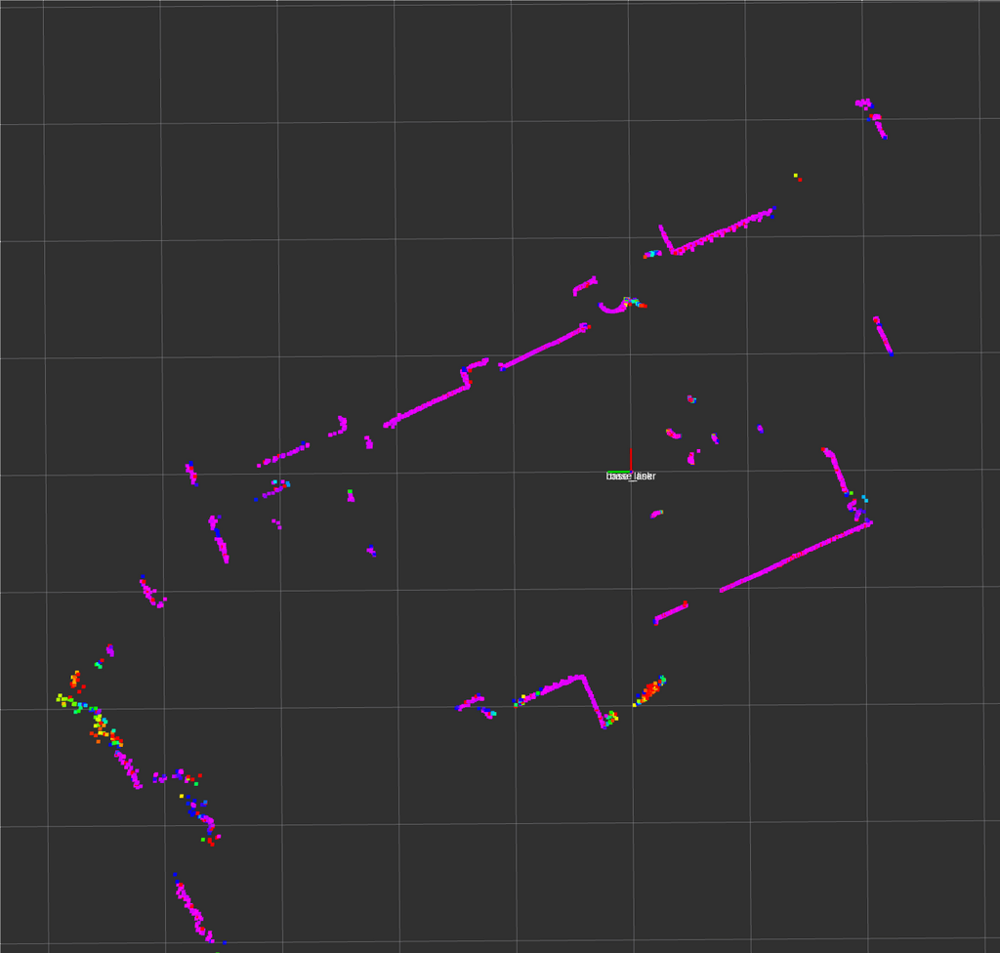Contents
Contents
When
After seeing cheaper models and price drops appear on an online shop I deciced to to order one and see how far approx. 50 Eur can go.
This will be a project for this winter. The first step will be to get it connected, then have a look at the data quality, plot the output and then try a SLAM algorithm.
In order to not have to implement everything from scratch I’ll attempt with the new version 2 of the “Robotic Operating System”.
If this works out I’ll add the Lidar to an existing modified robot vacuum I was working on some years ago
- 2015: a radio controlled car modified to be controlled via Wifi. Uses a USB-Webcam and a Raspberry Pi 2B (see Wifi-Car)
- 2018: CNC milling a base-plate for electronics on a cheap DirtDevil Spider vacuum robot (see CNC milling)
- 2018: operating it by WiFi connection with a Wemos D1 mini WiFi board (see Vacuum Bot)
The Raspberry PI consumed too much power and was too unstable. The Wemos D1 mini on the robot vacuum works well to control the motors and detect the impact at the front bumpers, but didn’t have a camera feed and isn’t easily integratable with the robotic operating system (ROS). Adding an old mobile phone to stream a camera image doesn’t feel nicely integrated and drains the batteries.
In the meantime we have the Esp32-Cam boards that have a camera on-board. If I can run ros-micro on it and connect motor controls lidar and odometry I’d have a full-fledged robot that can be used with the mapping algorithms running on a more powerful computer in ROS.
Background
Background
But first some background on Lidar, the device I have and SLAM.
Lidar
Lidar stands for “Light detection and ranging”. In these cheap 2D 360 Degree lidars there is:
- a laser pointer
- and some detection device that detects the intensity of the reflected light.
The laser pointer and detection is rotated by DC motor. The angular position is calculated by interruptions of a light barrier.
A weakness of these devices is that they can easily be fooled by reflective surfaces like mirrors, but also glossy surfaces of furnature and of course windows - typically balcony doors, which start at the height the lidar may be operating.
This alone will only provide the robot with information of obsticle distances surrounding it.
Simultaneous Localization and Mapping
If we stich multiple such scans together we end up with a map of the environment surrounding the robot and its position within it. This is called “Simultaneous Localization and Mapping” (SLAM). It continiously monitors the incomming data and stiches it together as the robot moves, we can map the surroundings and know the position of the robot within those surroudings.
Often also wheel rotary encoders are used to better estimate the movement of the robot as additional information to the often noisy lidar data.
Lidar Device
The cheap Lidar device I ordered comes with multiple brands on the box and a paper inside.
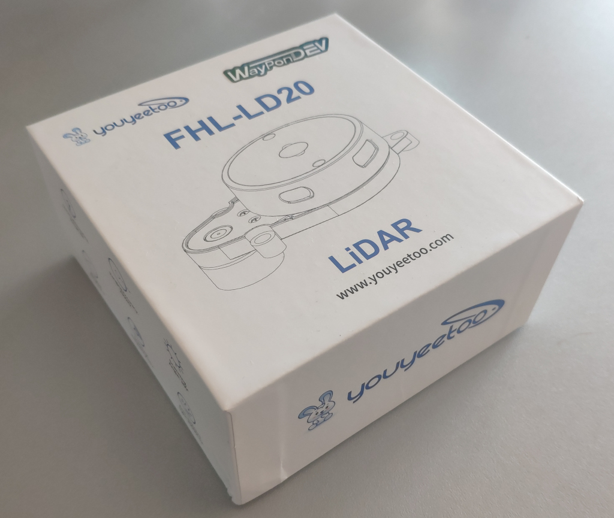Inside the box is the lidar itself, an USB-TTL with the cheap CP2102 (not an FTDI) and a thin wire.
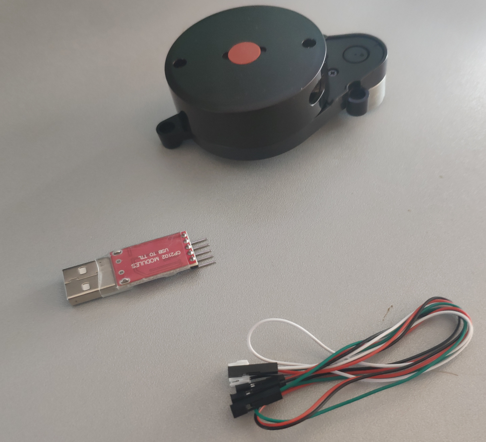On the box it says what this lidar should be capable of.
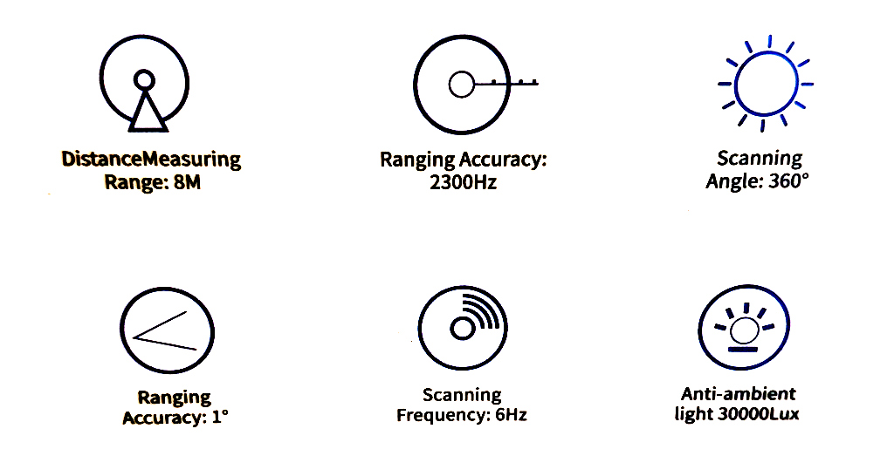How
Setup
After unboxing it I will see, if I can get it to function.
Hardware
On the hardware-side we need to connect the electronics, set up a serial and have a look at the serial protocol the lidar uses.
Connections
First we need to connect the lidar to the USB-TTL converter.
Wiring
I don’t trust the color coding of the cable and there’s no documentation in the box of the Lidar. Luckily there is a pinout diagram given in the documentation on the manufactureres webpage [1].
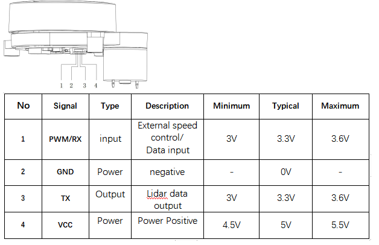According to this the wire colours are als follows
- left most, red = RX
- green = GND
- white = TX
- right mos, black = VCC
And so the colours are in fact counter-intuitive.
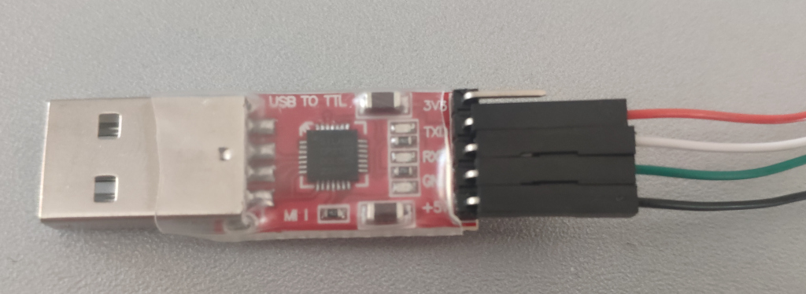Powering from the USB-Port
The working voltage is specified as 5V and smaller 1 A starting current, 300 mA working current.
the maximum load I found online
- 500 mA in USB 2.0
- 900 mA in USB 3.0
So we should be able to connect it directly to the USB TTL, but we might draw a bit more power than supported.
Baudrate
Baud rates can be anything from 110, 150, 300, 1200, 2400, 4800, 9600, 19200, 38400, 57600, 115200, 230400, 460800 to 921600. With 9600 being the most common. The baudrate is 230400 as per documentation is relatively high.
Serial Connection
I’ve come to apprieciate the simplicity of picocom over other tools to receive data from serial ports.
Upon connecting the USB-TTL with lidar attached to the computer it immediatly spins up and the USB-TTL shows up in dmesg
sudo dmesg | grep tty
[ 9041.924343] usb 1-3: cp210x converter now attached to ttyUSB0
picocom -b 230400 /dev/ttyUSB0
In the console we receive data, but it’s not human-readble.
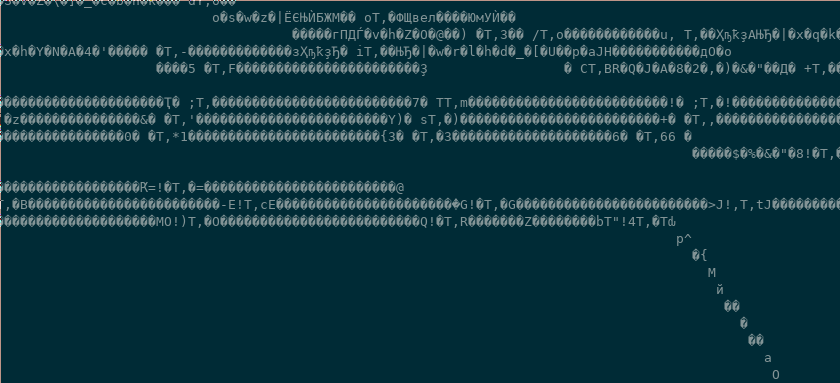Protocol
The protocol the YouYeeToo FHL-LD20 is documented on their Wiki-Page.
The data is not human readble, because it is binary. The details are in the documentation [1]
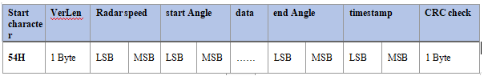
(Screenshot of documentation from [1])
The protocol is explained in writing
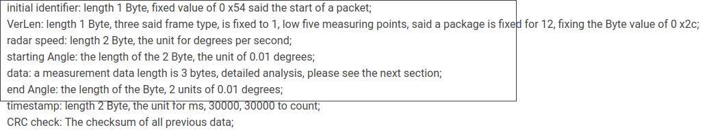
(Screenshot of documentation from [1])
and there is C example code given
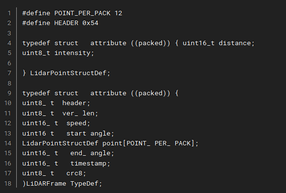
(Screenshot of documentation from [1])
So each time a 0x54 is received a new packet is started. A packet contains a start angle and a sequence of measurements followed by timestamp and crc for error correction.
Software
To do something with the data stream received from the Lidar we need software.
Brief thoughts on an own implementation
With the protocol details and a basic implementation given in the provided SDK, we could write our own software.
Others have struggeled with this particular lidar [3]. Note that other lidars, like the RPLidar [2], seem to follow a different protocol with 0xA5 and 0x5A being the sync bytes instead of 0x54.
In Python we could receive serial data like so:
ser = serial.Serial(‘/dev/ttyUSB0’ , 230400 , stopbits=1)
x = ser.read()
print(x)
We could then decode the binary with struct.unpack similar to what I’ve done in the past for decoding the binary format for Command and Conquer Replays (see Decoding Command and Conquer replays.
The data is given as distances per angle. Essentially “polar coordinates”. With some trigonometry we could convert that to cartesian coordinate space and plot it with MatplotLib from Python.
Since the lidar only sends a portion of its surrounding per packet, we’d need to implement some sort of “decaying” of the points to keep them on the screen for some time.
That would provide use with software that can draw the surroundings.
Robotic Operating System
The “Robotic Operating System” (ROS) recolves around a publish-subscriber concept. Serveral “bridges” can receive data from driver software and publish them into “topics” in ROS. These “topics” can then be received by the visualisation and algorithms in ROS.
Background on ROS
ROS is the go-to operating system for robots. It provides solid abstractions for most use-cases. Many implementations of algorithms in the scientific community are written for ROS. This makes a lot of bleeding-edge algorithms available for the robot hobbyist, but also means that getting it running can be tedious.
Experience with the Kinect 2
I’ve used the “Robotic Operating System” (ROS) version 1 in the past for a modified Kinect 2 depth sensor. This was probably a particularly difficult use-case. It never worked very stably, but I learned a lot about how ROS operates.
I remember libfreenect2-drivers, the iai_kinect2 bridge to get data into ROS, rtabmap to show a 3D map and dealing with docker for compatibility on my unsupportes operating system, hardware accelerated graphics, libusb driver issues.
This 2D only 360-Lidar that uses only serial communication should be much easier to integrate.
Different ROS Versions
There are currently two common major versions of ROS. ROS 1 and ROS 2.
If you see tools like ros run and catkin_make that is probably ROS 1.
If you see colcon build and ros2 launch that is probably ROS 2.
There are also bridges to connect the two.
The older ROS has more algorithms. The newer ROS is a bit easier to use and more streamlined.
For the new ROS they’ve more or less agreed on a standard way of naming topics so that some modules can run plug-and-play without reconfiguring much.
Of course there are also different versions of ROS 1 and ROS 2. The newest version may have some deal-breaking feature not supported that you may eventually need, but so far ROS 2 “foxy” seems to support the features I need.
Considerations with Frameworks and Microcontrollers
ROS comes with a reduced version “ros-micro” that can be compiled for moderately powerful micro-controllers.
The issues with such frameworks - be it Arduino, Zephyr or ROS - is that they are expected to be run alone on the target hardware.
In particular for my robot I’d need:
- Arduino for the Esp32Cam drivers
- Zephyr would be nice for I2C communication
- and ROS to get sensor data to the computer and into the ROS instance running SLAM there
Of course the software can’t be built together and would interfere with one another. Frameworks are really not meant to be combined.
To circumvent this I will probably keep my robot free of ROS and just write my own custom TCP-handler to send the serial communication to the computer. A custom built ROS-bridge will then receive that TCP data and pass it into ROS as if it were coming directly from the serial connection.
Overview
ROS uses a publish-subscriber system. This means you will be running multiple consoles at the same time.
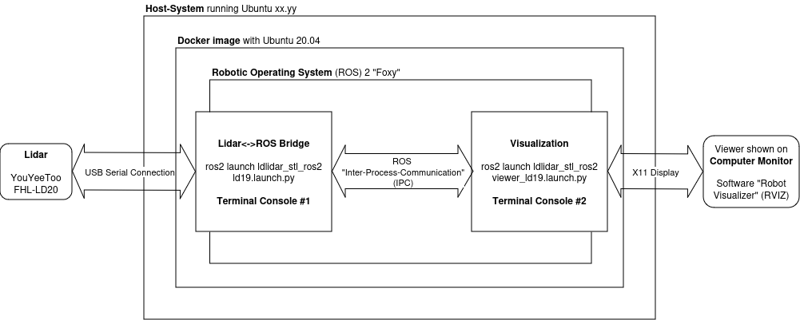I’m running Docker on my Host-System to provide a compatible abstraction to ROS. ROS typically isn’t compatible with the most recent Linux distributions. A native installation of a compatible version of a common Linux distribution is of course preferred, but for 2D lidars we can get away with using Docker.
Inside the Docker-Container I’ll run ROS with the Lidar-Bridge and Visualisation.
In order to get Serial communication to ROS and a view of the software out, I’ll need to setup Docker cleverly. For this I’ve prepared some shell-scripts.
Setting up ROS in Docker
To get a reproducable ROS configuration and run ROS on a compatible operating system, we need to set up a Docker container.
Dockerfile - start.sh script
For this I create a Dockerfile
vim $HOME/lidar/docker/Dockerfile
and add
FROM ubuntu:20.04
# -- set apt-get non-interactive
ENV DEBIAN_FRONTEND=noninteractive
# -- get dependencies
RUN apt-get update -qy
RUN apt-get -y install wget vim curl
RUN apt-get -y install software-properties-common
RUN add-apt-repository universe
# -- configure ROS apt-get repo
RUN curl -sSL https://raw.githubusercontent.com/ros/rosdistro/master/ros.key -o /usr/share/keyrings/ros-archive-keyring.gpg
RUN echo "deb [arch=$(dpkg --print-architecture) \
signed-by=/usr/share/keyrings/ros-archive-keyring.gpg] \
http://packages.ros.org/ros2/ubuntu $(. /etc/os-release && echo $UBUNTU_CODENAME) main" \
| tee /etc/apt/sources.list.d/ros2.list > /dev/null
# -- install ROS
RUN apt-get update
RUN apt-get install -y ros-foxy-desktop python3-argcomplete python3-colcon-common-extensions
# -- install slam toolbox
RUN apt-get install -y ros-foxy-slam-toolbox
To build it, I run
cd $HOME/lidar/
sudo docker build -t ros-lidar docker/
To be able to run it easily later on, in a script $HOME/lidar/start.sh I put
#!/bin/bash
sudo docker run --rm --name ros-lidar \
--net=host \
--env="DISPLAY" \
--volume="/tmp/.X11-unix:/tmp/.X11-unix:rw" \
--volume="$HOME/.Xauthority:/root/.Xauthority:rw" \
--device=/dev/ttyUSB0 --volume="$HOME/lidar/res/:/root/src/" \
-it ros-lidar /bin/bash
Docker needs a few parameters:
-
-rmmakes sure the container is cleared and runs clean each time. It doesn’t keep state, but this makes it easier to keep control of the configuration. For persistant changes I adapt the Dockerfile or the shell scripts I run within the container. -
--name ros-lidarsets a name for the running container. Otherwise Docker will generated new names and you’d have to look them up all the time. - in order for the container to access the display of the host operating system
--net=hostmakes sure the container can access the local area network of the host machine. This is important for displaying software via X11 we run in the container.--env="DISPLAY"maps theDISPLAYenvironment-variables (typically=0.0) in the Docker container, so applications know on which display to show--volume="/tmp/.X11-unix:/tmp/.X11-unix:rw"provides the container access with the X11-instance running on the host system in order to access the display--volume="$HOME/.Xauthority:/root/.Xauthority:rw"to give the container permission to access the X11 instance
-device=/dev/ttyUSB0to share the serial connection--volume="$HOME/lidar/res/:/root/src/"maps a directory into the container in which we can place the software and scripts-it ros-lidar /bin/bashruns the image named “ros-lidar” in interactive mode with the bash shell
To start the container run
$HOME/lidar/start.sh
It will drop me into a shell in which Docker is available.
To make the ROS environment available in the terminal run
source /opt/ros/foxy/setup.bash
and tools like colcon should be available.
Additional Consoles - enter.sh script
As we’ll be running multiple ROS applications we will need multiple consoles.
To open an additional console on the running container I created another script
In $HOME/lidar/enter.sh I put:
#!/bin/bash
docker exec -it ros-lidar bash
Setting up the Lidar ROS2 Bridge
Next we need the driver for the Lidar.
Download the Bridge Software
There are multiple sources
- Google Drive
- Gitea
- Github
and also multiple versions
- ldlidar_sl_ros2
- ldlidar_stl_ros2-3.0.3
- ldlidar_sl_sdk
After some investigation I found out I need the archives with ros2 in the name
- the “stl” versions contain launch scripts
*.ld19.launch.pyfor the ld19. It works with the ld20. - the “sl” seems to be older and contains only launch scripts for the
ld14that will not work with the ld20.
Additionally there is a separate SDK package
ldlidar_sl_sdk
It contains only the driver written in C++ without the ROS2 bindings.
So I settled for ldlidar_stl_ros2-3.0.3 and checked that out to my $HOME/lidar/res/ folder that will be mapped into the Docker container.
cd $HOME/lidar/res/
git clone https://github.com/ldrobotSensorTeam/ldlidar_stl_ros2.git
cd ldlidar_stl_ros2/
git checkout v3.0.3
Running the Bridge
For inside the Docker-Container and on the first console, I have a script $HOME/lidar/res/init.sh
I put this script in the $HOME/lidar/res/-directory so it is automatically mapped into the docker container.
#!/bin/bash
rm -rf /root/ldlidar_ros2_ws
mkdir /root/ldlidar_ros2_ws/
cd /root/ldlidar_ros2_ws/
cp -R /root/src/ldlidar_stl_ros2 /root/ldlidar_ros2_ws
source /opt/ros/foxy/setup.bash # -- make ROS environment available
colcon build # -- compile module
cd /root/ldlidar_ros2_ws
source install/local_setup.bash # -- make compiled module available
cd /root/ldlidar_ros2_ws/launch
ros2 launch ldlidar_stl_ros2 ld19.launch.py # -- launch bridge
It first deletes the current workspace and copies a fresh copy over.
It then proceeds to compile and launch the bridge.
To run the script in the docker container:
bash /root/src/init.sh
Running the visualisation
In $HOME/lidar/res/view.sh I put the script to start the visualisation
#!/bin/bash
cd /root/ldlidar_ros2_ws/
source /opt/ros/foxy/setup.bash # -- make ROS environment available
source install/local_setup.bash # -- make compiled module available
ros2 launch ldlidar_stl_ros2 viewer_ld19.launch.py # --launch viewer
It can be run in the docker container by
bash /root/src/view.sh
and should open the screen on your host manchine.
Usage
With the above set up we can run
$HOME/lidar/start.sh
to run the container and get the first console
Inside we can run
bash /root/src/init.sh
to start the bridge.
Then, while keeping that running, on a second console we can enter the container again
$HOME/lidar/enter.sh
and run the visualisation
$HOME/lidar/view.sh
Debugging
With the complexity comes the number of ways things can break.
Testing X11 forward
I’m using X11 as a display server and not Wayland. I don’t know, if this would work with wayland.
In order to check, if the docker container can display applications on your host operating system you can run
apt -y install x11-apps
xeyes
If it doesn’t work, make sure you check the docker parameters regarding X11 forwarding.
Testing the serial connection
If not locked to a specific port, the USB-TTL serial adapter may connect to a new port /dev/ttyUSB0, /dev/ttyUSB1, …
Locking it to a specific port via udev is not a good option, because then it will fail in-case the old port is blocked. That can be even more annoying.
In order to verify that data is reaching the docker container you can run picocom
apt -y install picocom
picocom -b 230400 /dev/ttyUSB0
To exit picocom on the keyboard do
[CTRL]+[A] then [CTRL]+[X]
Test with the SDK, own Software
This wasn’t necessary for me, but you can try the ldlidar_stl_sdk instead of the ROS2 bridge first and see if that works.
It has a basic visualisation that should show the 2D point cloud.
Alternatively you could write a Python-Script to decode the protocol (see above).
“Communication is abnormal”
In the beginning I had
[ldlidar_publisher_ld14]: ldlidar communication is abnormal
when running the ROS 2 Bridge.
This was resolved when switching to a newer Lidar driver with support for LD19 that also works with the LD20.
Results
The visualization of the incomming data in RViz gives an impression of the quality of the sensor.
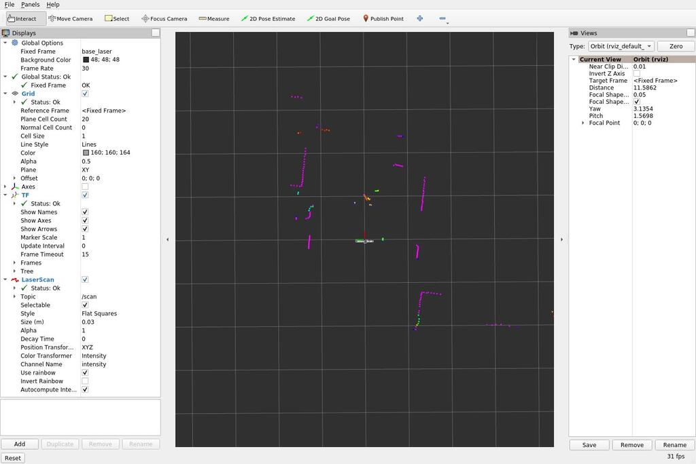Each frame only contains a portion of the entire range.
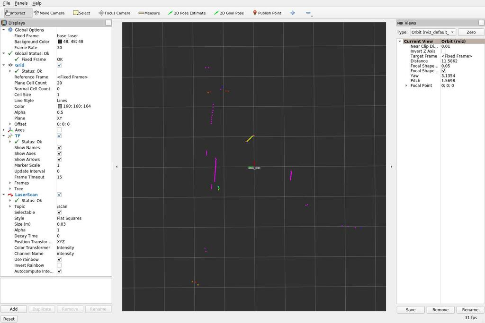So as a quick hack - there is a better way to do this - I took multiple screenshots with the RViz in focus and stacked them in Gimp by setting the background transparent via “color to alpha”.
while true; do scrot -u "$(date)".jpg; sleep 0.5; done
With an actual floor plan we can see the points lining up. Note that there is furnature in the way making the points in the lidar scan apprear closer than the walls in the floor plan.
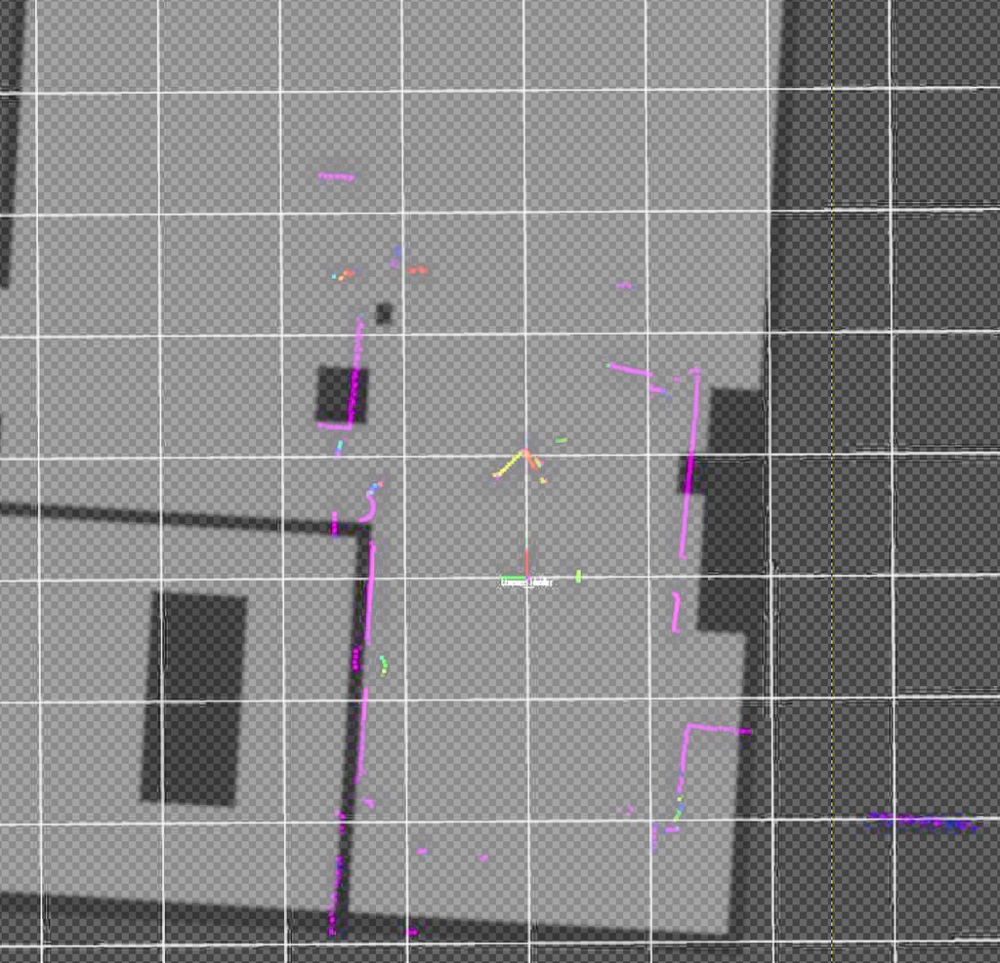There is an option in RViz “Decay Time” which does this better. It keeps the points on the screen for some time. Setting it to 3 seconds yielded this.
Progress
Conclusion
The results look promising. A SLAM algorithm would also add an additional layer of averaging and most algorithms also use wheel odometry to improve the mapping. First experiments with SLAM already show I’ll probably need an odometry (wheel rotation counter) sensor as well or the SLAM algorithms won’t function.
With the lidar and odometry data in ROS it should be possible to try various SLAM algorithms.
To run the lidar off of the Esp32-Cam micro-controller on the robot I’ll need to either devise an own protocol to transfer the data into ROS running on the computer or use ROS-micro on the chip. ROS-micro is based on FreeRTOS so it should be possible to port anything I need with acceptable effort.
I’ll have to see, if I can get the lidar, odometry, camera and motion controls onto the Esp32-Cam properly. Using ROS on the robot means it will not function without a backend running on a computer, but for advanced computationally expensive use cases there probably is no good way around this anyway.
1] https://wiki.youyeetoo.com/en/Lidar/LD20 2] https://github.com/Roboticia/RPLidar/blob/master/rplidar.py 3] https://forum.youyeetoo.com/t/ld19-process-the-signal-from-the-lidar-directly/507/6